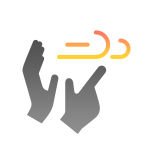
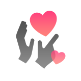
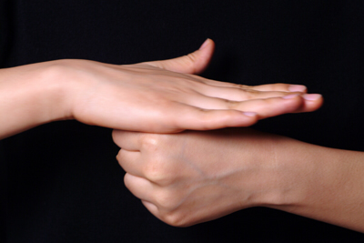

한국 수어



기획의도
우리나라에 한국어 말고도 공용어로 인정된 언어가 있다는 사실을 아시나요?
바로 농인들이 사용하는 ‘한국 수어’랍니다! 하지만, 청인이 수어를 접할 기회가 많지 않죠.
그래서 저희가 준비했습니다. 이름하여 ‘기초 수어 프로그램’! 더불어 살아가는 시대인 지금,
청인과 농인이 편하게 의사소통을 하며 서로 존중하는 삶을 같이 만들어 가봐요!
작품설명
저희 작품은 '수어를 처음 접하는 초보자들을 위한 기초 수어 프로그램'입니다.
직접 카메라에 수어를 하면 한국어로 번역해주는 기능과 마이크에 한국어를 말하면
그에 맞는 수어를 영상으로 띄워 주는 기능들을 통해 쉽게 수어를 접할 수 있습니다.
또한, 사전 기능을 통해서 여러 수어에 대해 손동작을 어떻게 해야 하는지 설명과 함께
영상도 볼 수 있어 수어를 배울 수도 있습니다.
한국어와 동등한 공용어로 인정된 한국 수어에 대해 같이 배워봐요!
Technology of Use
# MediaPipe Holistic
- MediaPipe Holistic은 실시간 3D 객체 탐지 및 포즈, 얼굴, 손의 스켈레톤 좌푯값을 반환해주는 구글 AI 프레임워크
- MediaPipe의 'Hands' + 'Face Mesh' + 'Pose'를 합친 상태
- 543개의 랜드마크 : Hands 42개 + Face 468개 + Pose 33개
- Pose → Hands → Face 순으로 인식
1. 33개의 랜드마크로 인간 Pose 인식
2. 손 부분 재크롭해서 42개의 랜드마크로 Hands 인식
3. 얼굴 부분 재크롭해서 468개의 랜드마크로 Face 인식
- 웹캠을 통해 실시간으로 동작을 캡처하여 각각의 랜드마크에 대한 좌푯값을 배열로 변환하여 저장
# LSTM vs Transformer
LSTM (Long short-term memory)
- 순환 신경망(RNN)의 기법 중 하나
- 자연어 처리, 음성인식과 같은 시계열 데이터를 주로 처리
- 게이트를 추가하여 필요한 기억은 저장하고 필요하지 않은
데이터는 삭제하여 기억하는 정도를 조절하는 것으로 기존
순환 신경망(RNN)의 장기 의존성 문제를 해결
Transformer
- 셀프 어텐션(self-attention) 기법을 사용하여 학습 속도를 높이
고 메모리 문제를 해결
- 입력 시퀀스의 요소들 간의 관계 및 중요성을 파악하여 문맥을
이해 : 시퀀스 내의 가까운 것 뿐만 아니라 멀리 떨어진 요소들
의 관계 파악 → 장기 의존성을 효과적으로 처리
- 대표적으로 Chat gpt에서 사용하며 문맥의 이해를 통해 특히
자연어 처리 작업에서 뛰어난 성능을 발휘
수어 인식은 이전 동작과 다음 동작 간의 관계가 중요하다
Transformer의 self-attention 기법을 통해 장기 의존성을 효과적으로 처리하며, 시퀀스 내에서 어떤 부분이 중요한지 동적으로 결정할 수 있다.
또한 transformer는 입력 시퀀스의 모든 부분을 병렬로 처리할 수 있기 때문에 수어의 여러 동작을 동시에 처리하기에 유리하다.
→ Transformer를 쓰기로 결정